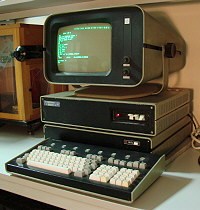

|
Заглавная страница
|
Электронная вычислительная машина
[править | править код]Материал из Википедии — свободной энциклопедии
| Текущая версия страницы пока не проверялась опытными участниками и может значительно отличаться от версии, проверенной 19 ноября 2022 года; проверки требуют 12 правок. |
Запрос «ЭВМ» перенаправляется сюда; см. также другие значения
|

Советская микроЭВМ ДВК-2. Сверху вниз: алфавитно-цифровой дисплей ( терминал ) 15ИЭ-00-013, блок логики дисплея, блок сопряжения, клавиатура ( дисководы размещаются снаружи и на фото не видны) |
Электро́нная вычисли́тельная маши́на (сокращённо ЭВМ)—
комплекс технических, аппаратных
и
программных
средств,
предназначенных для автоматической
обработки информации, вычислений,
автоматического
управления. При этом
основные функциональные элементы (логические, запоминающие,
индикационные и др.) выполнены на
электронных
элементах [1]. Термин
машина означает устройство,
выполняющее механические движения.
Современные компьютеры не
являются
машинами, название сохранилось за
ними от простых счетных машин [2].
Согласно Большому
энциклопедическому
словарю (2000) ЭВМ — то же, что компьютер.
Задолго до появления ЭВМ существовали другие виды вычислительных
машин.
|
Особенности терминологии:
| Эта статья или раздел нуждается в переработке. Пожалуйста, улучшите статью в соответствии с правилами написания статей |
|---|
Понятие «электронно-вычислительная машина» следует отличать от
более широкого понятия «вычислительная
машина» (компьютер);
[источник
не указан 2098 дней] ЭВМ является одним из способов воплощения
вычислителя. ЭВМ подразумевает
использование электронных
компонентов в качестве её функциональных узлов, однако вычислитель
может
быть устроен и на других принципах — вычисления могут быть
произведены механическим, биологическим,
оптическим, квантовым и
другими способами, работая за счёт перемещения механических частей,
движения
электронов,фотонов или за счёт других
физических явлений.
Кроме того, по типу функционирования вычислительная машина может
быть
аналоговой, цифровой и комбинированной (аналого-цифровой).
[источник
не указан 2088 дней]
В настоящее время термин «ЭВМ», как относящийся больше к вопросам
конкретного физического воплощения
вычислителя, почти вытеснен из
бытового употребления и в основном используется инженерами цифровой
электроники, как правовой термин в юридических
документах, а также в
историческом смысле — для обозначения вычислительной техники 1940-
1980-х годов
и больших вычислительных устройств, в отличие от
персональных.
Во времена широкого распространения аналоговых
вычислительных машин,
что тоже были, в своём подавляющем большинстве,
электронными, во
избежание недоразумений использовалось название
«цифровая электронная вычислительная машина» (ЦЭВМ) или
«счётная
электронная вычислительная машина» (СЭВМ); для подчеркивания того,
что это устройство
осуществляет непосредственно вычисления
результата, в то время как аналоговая машина по сути
осуществляет
процесс физического
моделирования с получением результата
измерением.
[править|править код]
История создания ЭВМ
[править | править код] Этот раздел не завершён.
Вы поможете проекту, исправив и дополнив его. Этот раздел не завершён.
Вы поможете проекту, исправив и дополнив его. |
|---|
Основная статья: История вычислительной техники
- Первые гражданские электромеханические вычислительные машины
Z1 и Z2 были созданы в конце 1930-х годов в Германии. - 1941 год — Конрад
Цузе создал вычислительную машину Z3, которая
имела все свойства современного компьютера. - 1942 год — в университете
штата Айова, Джон
Атанасов и его аспирант
Клиффорд Берри создали (а точнее — разработали и начали
монтировать) первую в США электронную цифровую вычислительную машину
Хотя эта машина так и не была завершена в связи с уходом
Атанасова на войну, она, как пишут историки, оказала большое
влияние на Джона Мокли, который, спустя четыре года создал первую в мире ЭВМ ЭНИАК. - В начале 1943 года успешные испытания прошла первая американская
вычислительная машина Марк I, предназначенная для выполнения
сложных баллистических расчётов для ВМС США. - В конце 1943 года заработала английская вычислительная машина
специального назначения «Колосс». Машина работала над
расшифровкой секретных кодов нацистской Германии. - В 1944 году Конрад Цузе разработал ещё более быструю
вычислительную машину — Z4. - 1946 год стал годом создания первой американской гражданской
универсальной электронной цифровой вычислительной машины
ЭНИАК. - В 1950 году в Киеве под руководством академика С.
А. Лебедева был
создан первый советский сверхвычислитель МЭСМ, на следующий год
в Москве под руководством И. С. Брука была создана ЭВМ М-1. - В 1959 году в Париже состоялся Всемирный компьютерный конгресс и
была создана международная федерация по обработке информации [3] - С 1962 года ЭВМ применяются на космических кораблях Союз
и Л-1
(облёт Луны). - 1967 стал годом, посвящённым формальным методам проектирования
электронных вычислительных машин под руководством Глушкова. - 30 октября 1967 года в СССР произведена первая в мире полностью
автоматическая стыковка двух космических аппаратов (беспилотных
кораблей «Союз» под названиями «Космос-186» и «Космос-188» [4]) - В 1969 году ЭВМ ракеты Н-1 обрабатывал данные с
более чем 13
тысячи датчиков ракеты. - К 1984 году в СССР было 10 тыс компьютеров в школах.
Основные виды ЭВМ
[править|править код]По размеру аппаратной части могут быть выделены различные классы
ЭВМ [5].
- Супер ЭВМ (Суперкомпьютеры).
- Большие ЭВМ(Мэйнфреймы).
- Мини-ЭВМ
— малая ЭВМ, имеет небольшие размеры и стоимость.
Появившись в конце 1960-х годов, мини-ЭВМ имели широкие
возможности в решении задач различных классов. - МикроЭВМ
— ЭВМ малых размеров, созданная на базе
микропроцессора. Ранее различали микроЭВМ следующих видов:
встроенные и персональные, настольные и портативные,
профессиональные и бытовые. Термин ПЭВМ (персональная ЭВМ) [6] [7]
вытеснен синонимом «персональный компьютер» (сокращённо: ПК). В
настоящее время персональные компьютеры не относятся к
микрокомпьютерам [источник не указан 60 дней]
См. также
[ править| править код ]
- Вычислительная машина
- Чарлз Бэббидж
- Ада Лавлейс
- Энциклопедия кибернетики
- ZX Spectrum
- БЦВМ
- ЕС ЭВМ
- СМ ЭВМ
- ЕС ПЭВМ
- Квантовый компьютер
- Биокомпьютер
- Оптический компьютер
Примечания
[править | править код]- Першиков В. И., Савинков В. М. Толковый словарь по информатике / Рецензенты:
канд. физ.-мат. наук А. С. Марков и д-р физ.-мат. наук И. В. Поттосин. — М.: Финансы и
статистика, 1991. — 543 с. — 50 000 экз. — ISBN 5-279-00367-0 - Машина//Философский словарь инженера —М.: Издательский дом МЭИ, 2016
- Всемирные компьютерные конгрессы
- Первая в мире полностью автоматическая стыковка двух космических аппаратов
- Федотова Е. Л., Федотов А. А. ИНФОРМАТИКА: КУРС ЛЕКЦИЙ.
- Музей компьютеров ПЭВМ Искра
- Архивированная
копия. Дата обращения: 16 декабря 2016. Архивировано из оригинала
27 октября 2016 года.
Ссылки
[править | править код]- « История советских компьютеров» — фильм от 26
мая 2018 года на YouTube
-канале «House of NHTi»
| Словари и энциклопедии Башкирская Болшое российская (старая версия) Современной Украины |
| Категория: Вычисли́тельная техника |
Эта страница в последний раз была отредактирована 31 июля 2023 в 00:37.
Текст доступен по лицензии Creative Commons
«С указанием авторства — С сохранением
условий» (CC BY-SA); в отдельных случаях могут действовать
дополнительные условия
Подробнее см. Условия использования.
Wikipedia® — зарегистрированный товарный знак некоммерческой организации
Фонд Викимедиа (Wikimedia Foundation, Inc.)
Политика конфиденциальности Описание
Википедии Отказ
от ответственности
Свяжитесь
с нами Кодекс
повидения Разработчики Статистика Заявления о куки
Мобильная
версия